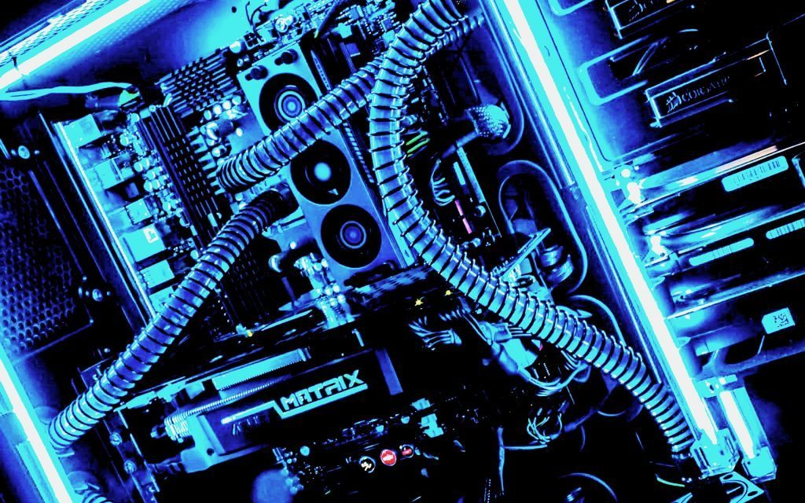

- 
Que tal soy Christian Diaz, estoy estudiando Ing. en Sistemas Computacionales, esta pagina fue realizada por mi para acreditar la materia de arquitectura de computadoras, en la pagina utilice lo que es HTML y CSS, para cualquier duda o error en la pagina me puedes mandar mensaje a mi
Facebook
En este video explico de lo que vimos en la unidad 1 de la materia, si quieres verlo, puedes darle click:
Video
En este video vas a encontrar informacion relevante, de las gamas de computadoras, baja, media y alta
utilizando los procesadores de Intel y tambien de AMD, para encontrar la gama que mas se adopta a ti,
si quieres ver el video puedes darle click:
Video